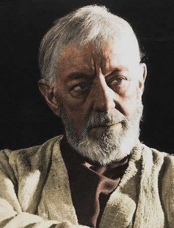
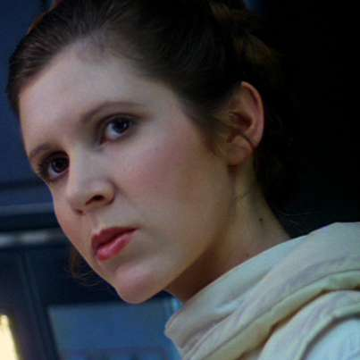

Герои
Сын Шми Скайуокер. Энакин родился в 42 до я. б. В беседе с Квай-Гон Джинном Шми отказывается говорить об отце мальчика и утверждает, что у Энакина не было отца. В связи с этим Квай-Гон сделал вывод, что Энакин был создан Силой. По утверждению Палпатина в Эпизоде III, Дарт Плэгас, учитель Дарта Сидиуса, научился провоцировать мидихлорианы с тем, чтобы создавать жизнь и предотвращать смерть. Однако в фильме говорится лишь, что Энакин — великое средоточие Силы в живом существе. В книге о Дарте Плэгасе выдвигается версия, что Энакин был рождён Силой в противовес экспериментам Плэгаса и Сидиуса по управлению мидихлорианами.
Энакин впервые появился в первой части саги «Эпизод I. Скрытая угроза» как девятилетний мальчик. Он и его мать были рабами у старьевщика и торговца запчастями Уотто. Энакин — вундеркинд и выдающийся техник. Он имел огромные познания в технике — он лично собрал дроида C-3PO и гоночный кар, на котором выиграл гонки, от которых зависела его дальнейшая судьба.
Энакин был найден на Татуине Квай-Гон Джинном, который распознал в Энакине Избранного — по древнему пророчеству он должен был уничтожить всех ситхов и принести баланс в Силу. Квай-Гон освободил Энакина и забрал с собой на Корусант, где потребовал у Совета Джедаев разрешения на обучение Энакина. Требование было отклонено, так как у Квай-Гона уже был ученик, а также потому что Энакин оказался старше необходимого возраста, испытывал страх и злость, оставшиеся от тех дней, когда был рабом, а также связанные с разлукой с матерью.
Оби-Ван Кеноби ↑
В юности (примерно во время действия фильма «Эпизод I: Скрытая угроза») верный и преданный Оби-Ван Кеноби обладал сдержанным чувством юмора и язвительным умом. Йода говорил, что он чувствует, будто независимый рыцарь-джедай Квай-Гон Джинн пренебрегает им; тем не менее, он очень благосклонно о нём отзывается. Сам Джинн хвалил достойные знания и потенциал Кеноби. Как рыцарь-джедай, он был мудр не по годам. Его скромность и мягкая манера речи контрастируют с его воинской доблестью. Умелый пилот (который, по иронии судьбы, не любит летать), Кеноби может сотворить мир словами, за что во время Войн клонов получил прозвище «Переговорщик». Как и его учитель, Оби-Ван интроспективен и сдержан.
Во втором сезоне анимационного сериала 2008 года «Войны клонов» (12—14 серии) Кеноби встречает свою давнюю знакомую герцогиню Сатин. Выясняется, что много лет назад Квай-Гон Джинн и Кеноби около года провели на Мандалоре, защищая герцогиню от наёмников. Тогда Сатин и Кеноби прониклись взаимной симпатией. В 13-й серии 2-го сезона сериала во время Войн клонов Сатин признаётся, что полюбила Кеноби ещё когда он защищал её вместе с Квай-Гон Джинном, на что джедай отвечает: «Молви ты тогда хоть слово, я бы покинул орден джедаев». Таким образом, в судьбах Кеноби и Энакина Скайуокера обнаруживаются сходные моменты, которые в итоге получили разное продолжение.
В фильме «Изгой-один. Звездные войны: Истории» вспоминается сенатором Органой, как старый друг, который помогал ему в войне клонов.
В классической трилогии он появляется как добрый и эксцентричный старый отшельник с Юндландской Пустоши и маг для тех, кто не знаком с путями Силы.
Оби-Ван является поистине одним из величайших джедаев, сумевших в реальности воплотить основные добродетели: терпение, добро, мудрость. Нет сомнения в том, что Люк не справился бы с возложенными на него надеждами без советов Оби-Вана. Переход Кеноби в состояние призрака Силы свидетельствует о том, что в своём развитии он достиг высот совершенства. И в конце «Возвращения Джедая» мы видим видение Люка: перед ним предстают три великих джедая: Йода, Оби-Ван Кеноби и Энакин Скайуокер.
Люк Скайуокер ↑

Родился за 19 ДБЯ, после развала Старой Республики. После того, как его отец обратился на тёмную сторону Силы, мать умерла, а сестра была удочерена Сенатором Бэйлом Органой и увезена на Алдераан, Люк воспитывался дядей (сводным братом отца) и тётей на пустынной планете Татуин. Имперские штурмовики, прилетевшие на Татуин в поисках похищенных повстанцами чертежей «Звезды Смерти», убили дядю и тётю Люка. Тогда юный Скайуокер, наставляемый старым джедаем Оби-Ваном Кеноби, примыкает к повстанческому Альянсу и становится значимой фигурой в ходе Галактической Гражданской войны. Будучи причастным к тайнам Силы, он возродил Орден джедаев, практически уничтоженный антагонистом джедаев — ситхом Императором Палпатином.
Плод запретной любви между Падме Амидалой и джедаем Энакином Скайуокером, Люк Скайуокер долго не ведал о своём происхождении. Всё детство Люк провёл на Татуине, работая на ферме своего дяди. Но однажды в руки Люку попали два дроида — C-3PO и R2-D2 — и последний поведал ему о своём задании — отыскать Оби-Вана Кеноби, которого Люк знал как странного отшельника, живущего неподалёку. Выслушав послание, переданное дроидами, Оби-Ван отправился на помощь товарищам и взял с собой Люка. Люк проявил себя способным учеником и смог обучаться у самого Йоды. Страшную тайну своего рождения Люк узнал от своего отца Дарта Вейдера. С покорностью и спокойствием, отличающими истинного джедая, Люк принял свою судьбу и продолжил сражаться. И наконец, Скайуокер безоружным пришёл в ловушку, подготовленную самим Императором с целью переманить его на Тёмную сторону. Во время сражения с отцом, Люк попытался повлиять на него с целью вернуть на светлую сторону Силы. После того как Дарт Вейдер был побеждён, Люк Скайуокер не стал его убивать и продолжил убеждать вернуться обратно к свету, несмотря на то, что в это время император подвергал его пыткам молнией, в итоге Дарт Вейдер осознал правоту сына и сбросил императора в шахту Звезды смерти, после чего сам погиб.
Лея Органа ↑
Лея Органа-Соло (родилась как Лея Скайуокер) была дочерью рыцаря-джедая Энакина Скайуокера и сенатора Падме Амидалы Наберри, а также сестрой-двойняшкой Люка Скайуокера. После рождения её удочерили Бэйл Органа и королева Бреха, сделав её принцессой Алдераана. Получившая прекрасное образование сенатора, Органа была известна как непоколебимый лидер во время Галактической Гражданской войны и других последующих галактических конфликтов, став одним из величайших героев Галактики.
Самый молодой сенатор в Галактическом Сенате, она тайно поддерживала повстанцев и решила передать Альянсу планы «Звезды Смерти». Она никогда не изменяла своим идеалам свободы и равенства для всех жителей галактики и стала одной из важнейших фигур Альянса повстанцев во время Галактической Гражданской войны.
Позднее она вышла замуж за Хана Соло и стала матерью сына Бена. По мере того как их сын взрослел, Лея и Хан увидели в нём слабость к Тёмной Стороне Силы и отдали его на обучение Люку, однако даже брат Леи не смог уберечь Бена от Сноука — Верховного Лидера Первого Ордена, порождённого Тёмной Стороной. Сын Леи и Хана поменял своё имя на Кайло Рен и пошёл по пути Дарта Вейдера.
Годы спустя Лея была избрана главой сил Сопротивления. Несмотря на то что она выросла в привилегированном окружении мирной планеты, главной идеей которой была демилитаризация, исключавшая оружие из своей культуры, в эти трудные годы блестящий дипломат получила военные навыки самозащиты, как с помощью бластера, так и в рукопашной. Она использовала эти знания во многих войнах и других конфликтах, которые сотрясали Галактику.